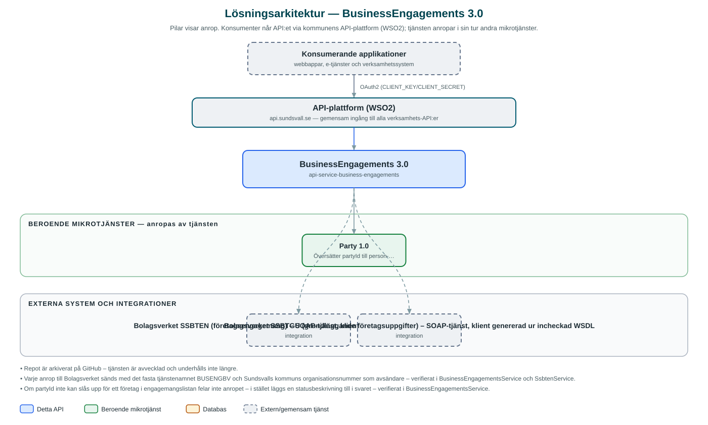

BusinessEngagements
Hämtar en persons företagsengagemang och företags grunduppgifter från Bolagsverket, uppslaget på partyId.
Om API:et
BusinessEngagements är en proxy mot Bolagsverkets tjänster SSBTEN och SSBTGU. API:et svarar på vilka företag en person har engagemang i (till exempel som styrelseledamot eller firmatecknare) och hämtar grundläggande företagsinformation om ett enskilt företag.
Anroparen använder kommunens partyId i stället för person- eller organisationsnummer: tjänsten översätter partyId till personnummer via Party-tjänsten innan Bolagsverket anropas, och berikar svaret genom att slå upp partyId för varje företag i engagemangslistan. Därmed behöver konsumerande applikationer aldrig hantera personnummer direkt.
Repot är arkiverat på GitHub och tjänsten är avvecklad.
Det här gör API:et
- Företagsengagemang per person – Listar vilka företag en person har engagemang i, hämtat från Bolagsverkets SSBTEN.
- Företagsinformation – Hämtar grunduppgifter om ett företag från Bolagsverkets SSBTGU.
- Uppslag via partyId – PartyId översätts till person- respektive organisationsnummer via Party-tjänsten, så att anroparen slipper hantera personnummer.
- Berikning med partyId – Varje företag i engagemangslistan kompletteras med sitt partyId; misslyckade uppslag markeras i svaret i stället för att fela.
- Cachade svar – Svar från Bolagsverket och Party cachas i minnet i fem minuter för att minska belastningen.
API-dokumentation
API:ets samtliga resurser, parametrar och datamodeller finns beskrivna i en OpenAPI-specifikation som är hämtad ur källkodsförrådet. Den kan utforskas interaktivt i Swagger UI eller laddas ner som YAML.
Teknisk dokumentation
Nedan beskrivs hur tjänsten är uppbyggd, vilka andra tjänster den anropar och vad som krävs för att driftsätta den. Informationen är härledd ur källkoden och dess konfiguration på GitHub.
Arkitektur

API:et är en mikrotjänst (Java 25, Spring Boot via kommunens gemensamma tjänsteplattform dept44 (8.0.5), byggd med Maven). Konsumenter når tjänsten via kommunens gemensamma API-plattform (WSO2) på api.sundsvall.se – tjänsten anropas aldrig direkt. Tjänsten anropar i sin tur andra mikrotjänster i kommunens tjänstelandskap. Övriga integrationer som förekommer i koden: Bolagsverket SSBTEN (företagsengagemang) – SOAP-tjänst, klient genererad ur incheckad WSDL, Bolagsverket SSBTGU (grundläggande företagsuppgifter) – SOAP-tjänst, klient genererad ur incheckad WSDL.
Teknikstack
- Språk: Java 25
- Ramverk: Spring Boot via kommunens gemensamma tjänsteplattform dept44 (8.0.5), byggd med Maven
- Övrigt: SOAP-klienter genererade ur WSDL för SSBTEN/SSBTGU, Caffeine-cache för svar
Beroenden till andra mikrotjänster
Tjänsten anropar följande mikrotjänster. Versionerna är hämtade ur källkodens integrationsklienter.
| Tjänst | Version | Användning |
|---|---|---|
| Party | 1.0 | Översätter partyId till person- och organisationsnummer och omvänt. |
Konfiguration och driftsättning
- application.yaml med URL:er och anslutningsuppgifter för Bolagsverkets tjänster samt Party-tjänsten
- Caffeine-cachar (max 100 poster, 5 minuters livslängd) för företagsinformation, engagemang och id-översättningar
- Tjänstenamnet BUSENGBV skickas i varje anrop enligt överenskommelse mellan Bolagsverket och Sundsvalls kommun
- Anrop görs per kommun – municipalityId ingår i alla API-vägar
Noterbart ur källkoden
- Repot är arkiverat på GitHub – tjänsten är avvecklad och underhålls inte längre.
- Varje anrop till Bolagsverket sänds med det fasta tjänstenamnet BUSENGBV och Sundsvalls kommuns organisationsnummer som avsändare – verifierat i BusinessEngagementsService och SsbtenService.
- Om partyId inte kan slås upp för ett företag i engagemangslistan felar inte anropet – i stället läggs en statusbeskrivning till i svaret – verifierat i BusinessEngagementsService.
- Kodkommentarer talar om en databascache, men det finns ingen databas i tjänsten – cachningen sker i minnet med Caffeine (5 minuter) – koden är sanningskällan.
Källkod
Källkoden är öppen och finns hos Sundsvalls kommun på GitHub. I källkodsförrådet finns även instruktioner för att klona, konfigurera och starta tjänsten i egen miljö.